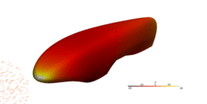
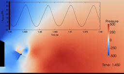

Description détaillée : A Novel and Simple Aircraft Requiring Minimal Power to Hover
| Engine Mount System for Ultra High Pass Engine
Gagnon, L., Morandini, M., and Ghiringhelli, G.L., « A review of friction damping modeling and testing », Archive of Applied Mechanics, 2019, doi:10.1007/s00419-019-01600-6 Gagnon, L., Morandini, M., and Ghiringhelli, G.L., « A review of particle damping modeling and testing », Journal of Sound and Vibration, 459, 2019, doi: 10.1016/j.jsv.2019.114865 |
 | An aeroelastic study of cycloidal rotors used in various configurations
Description détaillée : aeroelastic study of cycloidal rotors Developed multibody dynamics models using the MBDyn multibody software for mission analysis of a Heligyro, a Helicopter, and a Quadricyclogyro: 1. optimized using numerical genetic minimization approach; 2. relied on both Gnu Octave and Dakota for serial and parallel optimizations; 3. with vibration/comfort control using filters into the controller algorithm; 4. each aerial vehicle can fly totally autonomously; 5. limited dimensions to a compact Heligyro and thus need strong cycloidal rotors to produce adequate torque; 6. rotor weight estimation based on gross estimates or 3D printed plastic materials. Setup a cycloidal rotor CFD model for the car-rotor configuration, the Cyclomobile, which is ready for optimization or implementation of a faster CFD method. Conducted preliminary tests for the fabrication of a 3D printed cycloidal rotor and small drone: 1. 3D printing tests with nylon and PLA; 2. dimensioned the rotor by optimization of the aerodynamic analytic equations; 3. set up an hybrid gradient-based optimization of the drone analytic dimensioning using SageMath mathematical toolkit and Dakota. Please refer to the relevant page to find the associated publications. |
 | Cycloidal Rotor Optimized for Propulsion
Site officiel : http://crop-project.eu Vidéos descriptifs : Cycloidal Rotor Optimized for Propulsion Aerodynamic models for cycloidal rotor analysis Version gratuite prépublication |
{kind=link}
 | Allée Fruitée Site internet du projet Mise à jour suite à la création de l'Allée Fruitée d'Univert Laval Les étudiants qui plantaient des arbres |
 | Alérion Supermileage The process of making an aerodynamically efficient car body for the sae supermileage competition |
{kind=link}
 | Calculation of the Aerodynamic Resistance of a Vehicle Equipped with Moving Parts Mémoire : calcul de la résistance aérodynamique d'un véhicule muni de pièces en mouvement Simulation of a rotating device that reduces the aerodynamic drag of an automobile |
{kind=link}
legal notice